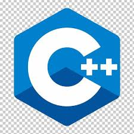
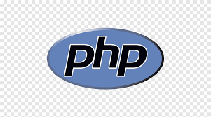
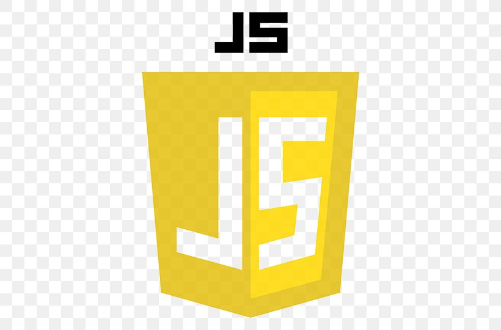
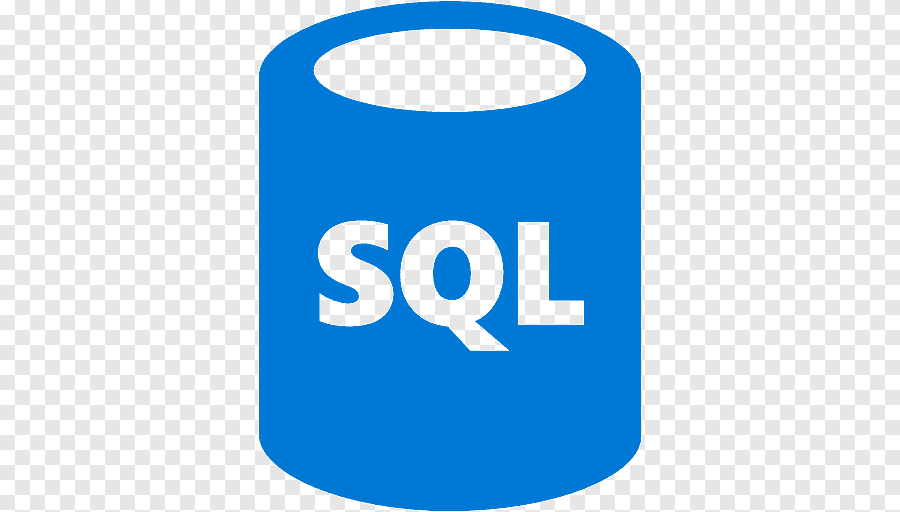
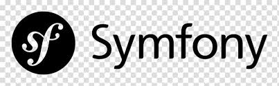
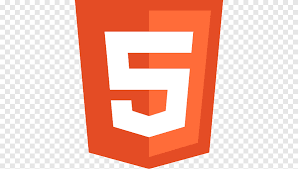
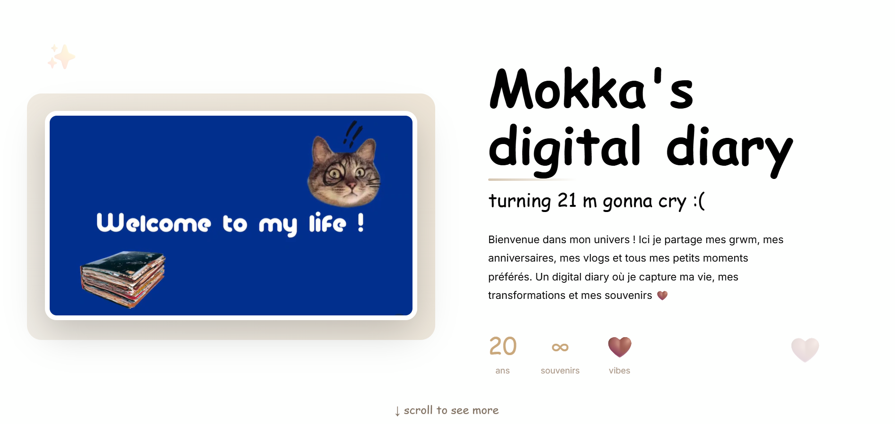
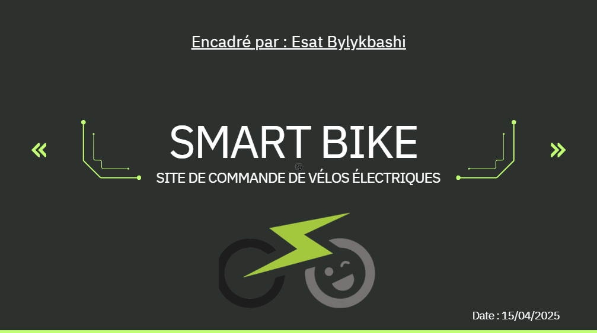

Salut, je suis
Molka Belakhdar


Salut, je suis
C'est qui Molka ?
01/08/2024 - 01/09/2025
chez Medianet ( Tunisie )
15/12/2025 - 20/02/2026
chez Caplogy ( France )
Bachelor en Sciences
Informatiques et Numériques
Mes technologies
 Python
Python

C++
PHP
JavaScript
SQL
Symfony
HTML CSS
CSS
 MySQL
MySQL
 MongoDB
MongoDB
 GitHub
GitHub
 Linux
Linux
Mes projets récents

Objectif : Journal personnel numérique avec interface moderne
Équipe : Projet solo
Technologies : HTML , CSS3 et JavaScript
Fonctionnalités : Écriture d'entrées, sauvegarde locale, design responsive et interface intuitive
Durée de réalisation : 3 semaines

Objectif : Créer un site web de E-commerce avec une base de donnés fonctionelle. Le site vise à présenter certains produits de la marque 'SmartBike' et à permettre aux utilisateurs de les ajouter à leur panier.
Équipe : Projet de groupe ( 4 membres )
Technologies : HTML , CSS3 et PHP
Fonctionnalités : Présentation de produits, ajout au panier, gestion de la base de données pour stocker les informations des produits et des utilisateurs.
Durée de réalisation : 3 semaines
Ma veille techno
Dans le cadre de mon développement professionnel, je mène une veille active sur l'usage de l'IA dans le développement logiciel. Cette veille me permet de rester informée des dernières avancées de ChatGPT, GitHub Copilot et des outils qui transforment le métier de développeur.
Ce que j'ai lu
Titre : Le créateur d'OpenClaw, l'IA open source qui fait le buzz, rejoint OpenAI
Date : le 16 février 2026 à 08:51
Source : 01net.com
Pourquoi cet article ? J'ai choisi cet article car il montre que les agents IA autonomes deviennent un enjeu stratégique majeur — au point qu'OpenAI recrute directement le créateur d'un projet open source viral. En tant que future développeuse, ça me concerne : ces outils vont changer concrètement la façon dont on code et dont on travaille.
Titre : Quand les programmeurs ne codent plus : la révolution en marche de l'IA
Date : le 15/02/2026 à 21h06
Source : Le Point
Pourquoi cet article ? J'ai choisi cet article car il montre concrètement le changement de rôle du développeur : on passe de quelqu'un qui écrit du code à quelqu'un qui supervise et valide ce que l'IA produit. L'exemple de Spotify — un ingénieur qui corrige un bug depuis son téléphone dans le métro sans toucher une ligne de code — illustre parfaitement où en est le métier aujourd'hui. C'est exactement le genre d'évolution que je dois anticiper dans ma carrière.
Titre : Comment OpenAI bichonne les développeurs, menacés par l'IA
Date : le 16 février 2026 à 13h00
Source : Challenges
Pourquoi cet article ? J'ai choisi cet article car la phrase "chef d'orchestre plutôt que simple exécutant" résume bien ce que le métier de développeur est en train de devenir. Ce qui m'a marquée, c'est que la compétence clé ne sera plus de connaître un langage par cœur, mais de savoir concevoir une architecture et formuler de bonnes instructions à l'IA. C'est une façon de voir mon futur métier qui change complètement ma façon de me former.
Ma stack
Ma stack pour capter, filtrer et partager les informations stratégiques.
Feedly, Google Alerte
Mots-clés : IA développeur · GitHub Copilot · ChatGPT coding
Veille réalisée toutes les 2 semaines sur le sujet
Bilan de parcours
Entre mes stages, mes projets personnels et ma formation à EPSI Paris, j'ai construit une vraie vision du développement — technique, rigoureuse, et toujours orientée vers l'impact. Voici ce que j'ai retenu de ces expériences.
Ce que j'ai appris
Travailler chez Medianet puis Caplogy m'a appris que le code qu'on écrit seul la nuit, ça ne suffit pas en entreprise. Il faut que les autres comprennent, maintiennent et fassent évoluer ce qu'on a fait.
→ Rigueur, lisibilité, structure.
Sur Smart Bike à 4, j'ai compris que la communication fait ou défait un projet. Se synchroniser, poser des questions, ne pas bloquer en silence — ça change tout.
→ Écoute, partage, collaboration.
L'IA, les nouveaux frameworks, les outils qui émergent — rester curieuse et faire de la veille régulièrement, c'est ce qui permet de pas se retrouver larguée dans 2 ans.
→ Veille active, adaptation, évolution.
Mes acquis
Python · PHP · JavaScript · SQL
HTML/CSS · Symfony · MySQL · MongoDB
GitHub · Linux
Travail en équipe
Autonomie & organisation
Veille technologique
Adaptabilité
Mon parcours en bref
Cette année j'ai intégré directement la 2ème année de BTS SIO SLAM, sans avoir fait la 1ère. Mes amis avaient une année entière d'avance sur moi ça m'a mis la pression mais surtout ça m'a donné envie de me battre pour être à leur niveau. Et j'y suis arrivée.
Stage en France, dans un environnement plus exigeant et plus structuré. Montée en compétences rapide, gestion de projets concrets en équipe.
Mon tout premier projet web en équipe. On a créé un site e-commerce de A à Z avec une base de données fonctionnelle — et honnêtement, j'étais trop fière de moi. C'est là que j'ai vraiment eu le déclic pour le développement.
La suite
Valider mon BTS, puis mon Bachelor spécialisé en intelligence artificielle, acquérir de l’expérience pratique via un stage ou une alternance en IA/développement et ensuite intégrer un cycle d’ingénieur pour aller encore plus loin dans ce domaine !
Mes infos